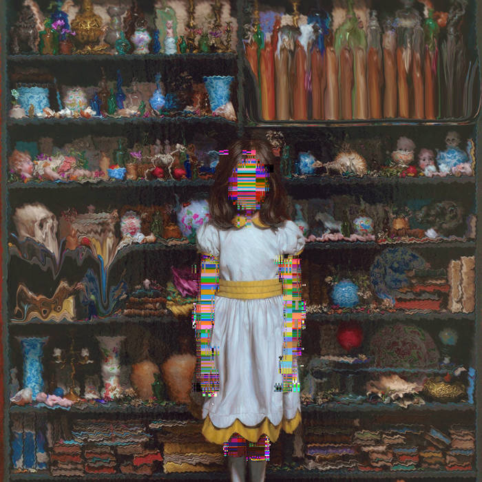

Out of the many different genres and styles of music, I'd have to say that my favorite artist is a man that goes by RUDE; their musical style falls into the experimental genre. As I know of they've been active since the summer of 2015 starting eith the Haze single. They continued later with the release of the Eternal Summer EP in summer of 2016 and later with the release of Forever Lotus EP in early 2017.They have a very different style that spans from experimental to a more eastern influenced style that conveys various emotions with each song.
I personally learned of RUDE in summer of 2016, it started with the Eternal Summer EP and song Eternal Youth. The song was a very calming tone, while at the same time mildly saddening; to me the song is more so a song of nostalgia, making me remember how I'd spend much of my childhood on my grandmothers porch and watch cars pass. The thing that strikes home the most to me, is that the song brings forth that nostalgic feeling of youth, making you miss those days a bit. The other song I listened to around the same time was Yamagsumi(RUDE remix), a cover of a song for a character from the series Naruto. The song conveys very sad emotions with its slow pace and use of violin throughout the song as well. His discography is full of songs that are calming yet provoke emotion in some way,in most cases making you question some facet of life. Nowadays, RUDE creates songs that convey emotions that vary from song to song; each track brings various emotions due to the feelings that the mood of each song convey. There are emotions ranging from nostalgia to feelings of deep contemplation about topics like life and death. Each song has it's own unique feel to it in my opinion.
Of the many songs RUDE has created, I'd say that my favorite song has to be Eternal Youth; personally the feelings of nostalgia it creates for me hit very close to home. Though I remember these feelings fondly, I remember that they were in the past and continue forward with that fondness in my heart. To my knowledge the artist has been active for about a year and a half at this point to my knowledge; though despite this short time their music displays a level of care and attention that I think alot of music today lacks.